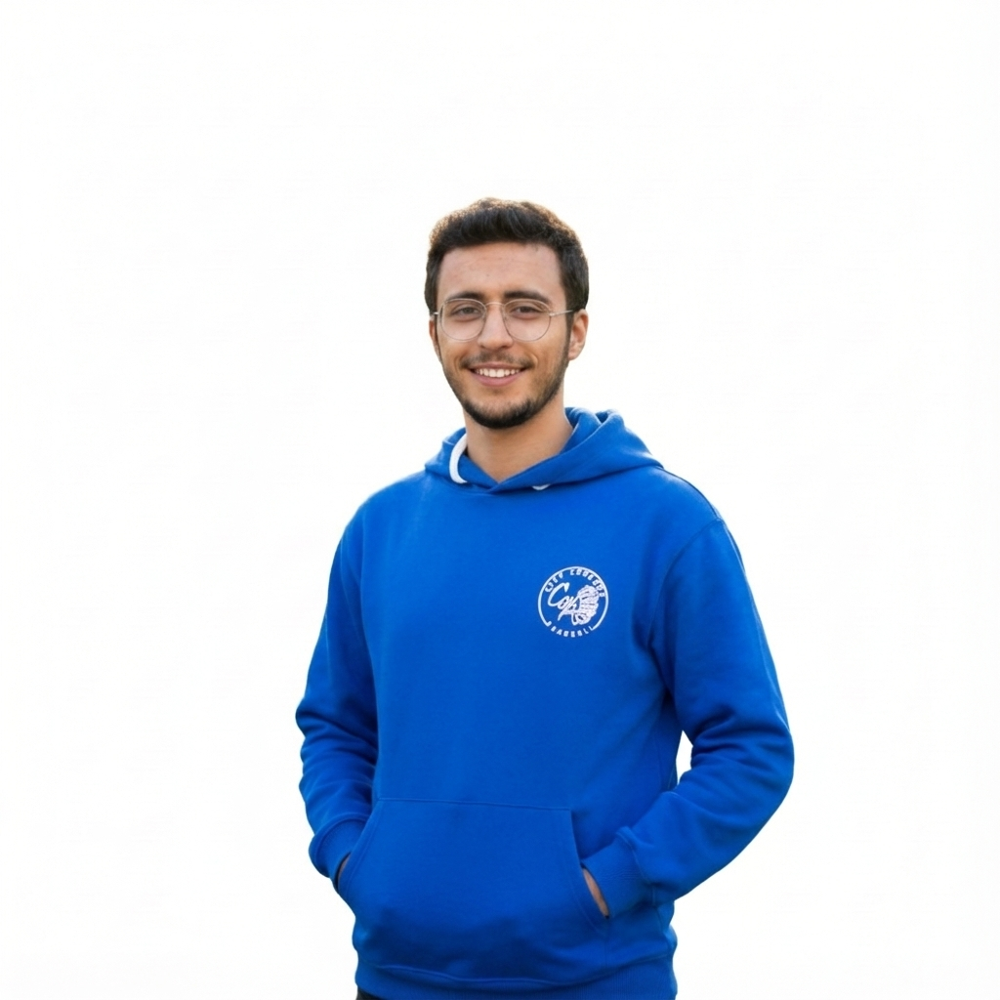

Bienvenue sur mon site personnel
Étudiant en Génie Informatique à l'IIT
À propos de moi

Je suis étudiant en première année de Génie Informatique à l'Institut International de Technologie (IIT). Passionné par le développement web et les nouvelles technologies, je cherche constamment à améliorer mes compétences et à relever de nouveaux défis.
Ce site web présente mon parcours académique, mes compétences, mes expériences professionnelles ainsi que mes passions et centres d'intérêt.
Suivez-moi sur les réseaux sociaux